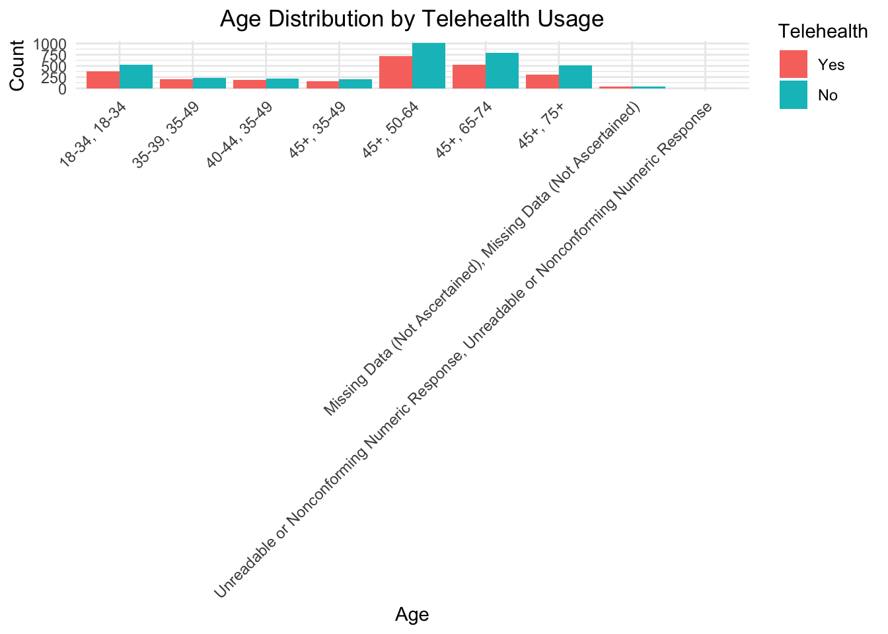
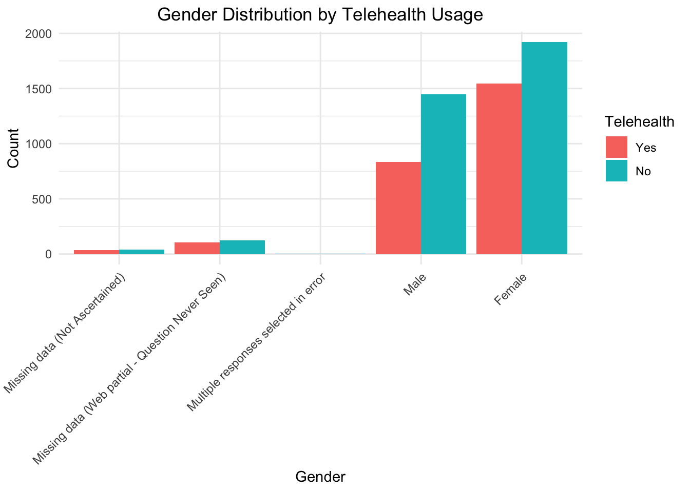
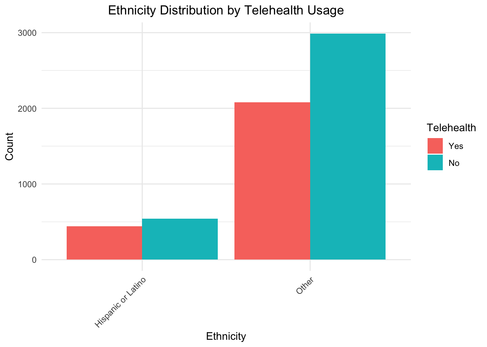
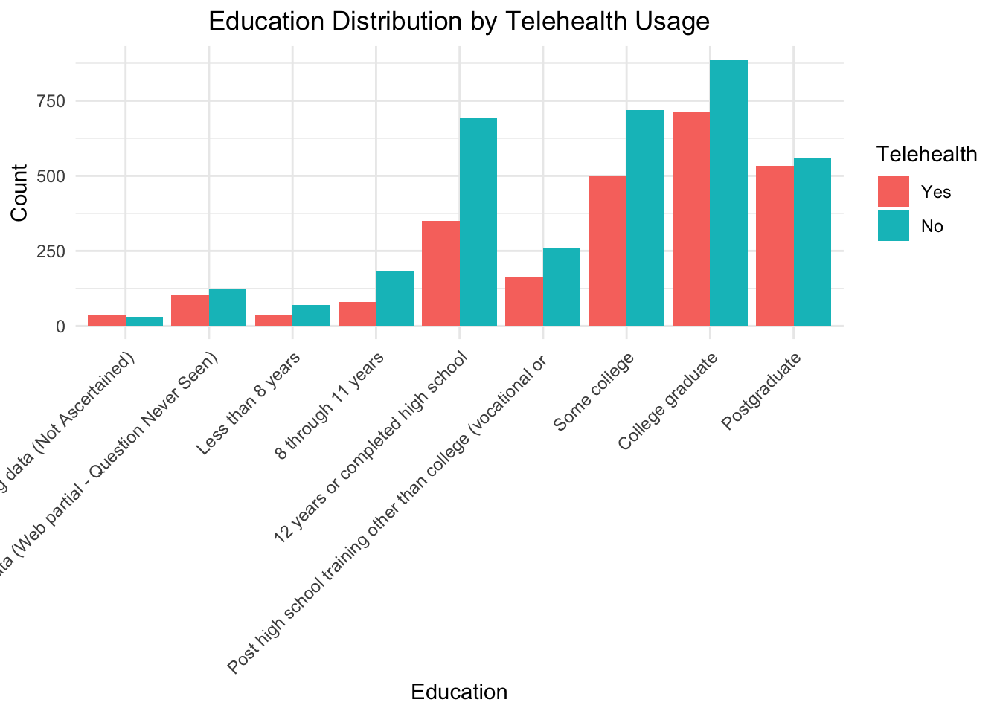
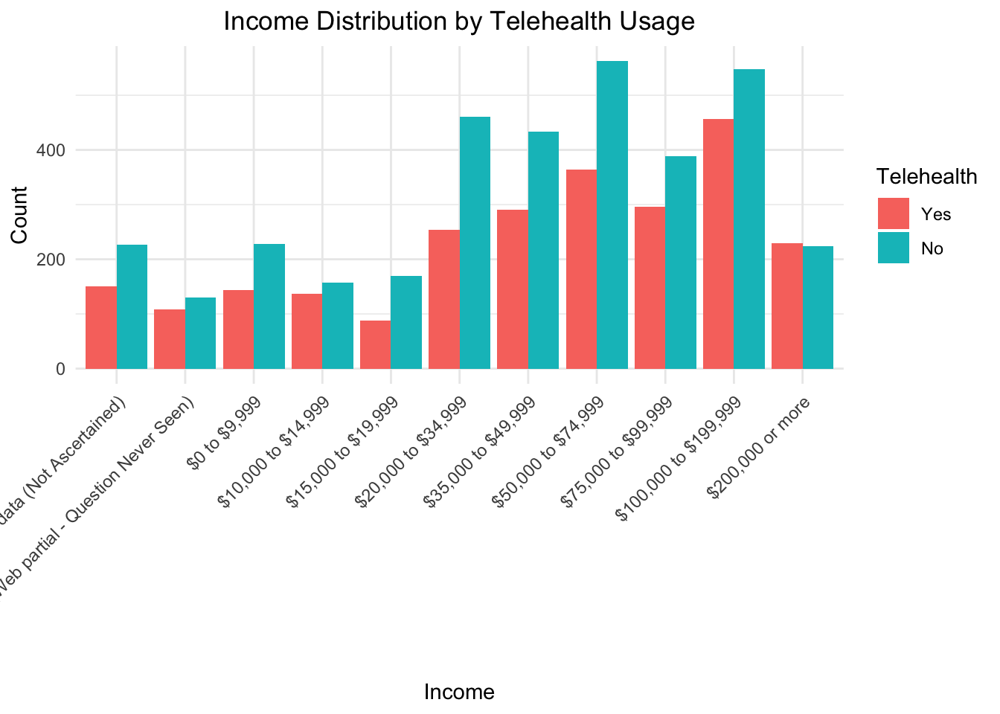
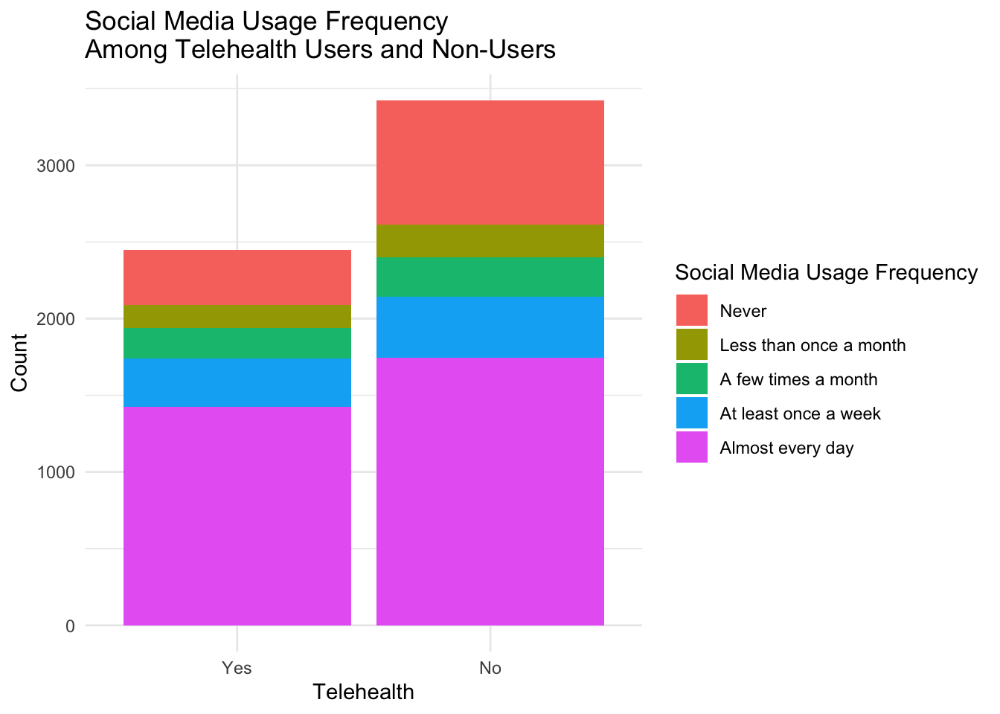
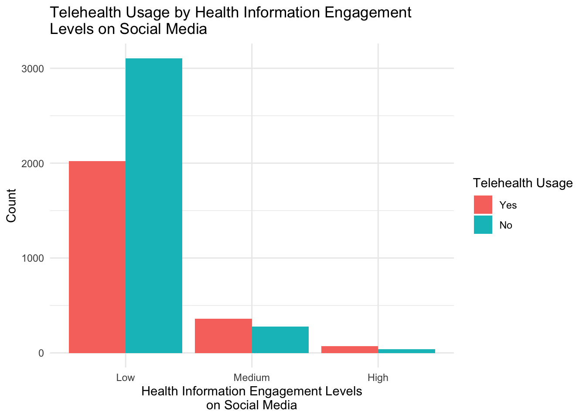

Code
# Load the file
file_path <- here("data", "hints6_public.rda")
load(file_path)
# Change the file name to 'hints'
hints <- public# Load the file
file_path <- here("data", "hints6_public.rda")
load(file_path)
# Change the file name to 'hints'
hints <- public# Selecting relevant columns for RQ1
health_data <- hints %>%
select(AgeGrpA, AgeGrpB, BirthGender, RaceEthn, RaceEthn5, RACE_CAT2, Education, IncomeRanges, ReceiveTelehealthCare)
# Combine Age groups into a single variable
health_data <- health_data %>%
mutate(Age = paste(AgeGrpA, AgeGrpB, sep = ", "))
# Standardize Ethnicity categories
health_data <- health_data %>%
mutate(Ethnicity = case_when(
RaceEthn %in% c("White", "Caucasian") ~ "White",
RaceEthn %in% c("Black", "African American") ~ "Black or African American",
RaceEthn %in% c("Hispanic", "Latino") ~ "Hispanic or Latino",
RaceEthn %in% c("Asian", "Pacific Islander") ~ "Asian or Pacific Islander",
TRUE ~ "Other"
))
# Rename columns
health_data <- health_data %>%
rename(Telehealth = ReceiveTelehealthCare,
Gender = BirthGender,
Income = IncomeRanges)
# Recoding responses for Telehealth
health_data <- health_data %>%
mutate(Telehealth = recode(Telehealth,
"No telehealth visits in the past 12 months" = "No",
"Yes, by video" = "Yes",
"Yes, by phone call (voice only with no video)" = "Yes",
"Yes, some by video and some by phone call" = "Yes",
"Missing data (Web partial - Question Never Seen)" = "Missing",
"Missing data (Not Ascertained)" = "Missing"))
# Remove rows with missing or invalid data
health_data_clean <- health_data %>%
filter(
!is.na(Telehealth) & Telehealth != "Missing",
!is.na(Gender),
!is.na(Education),
!is.na(Income),
!is.na(Ethnicity),
!is.na(Age))
# Pivot longer: Convert Age and Ethnicity into a longer format
health_data_long <- health_data_clean %>%
pivot_longer(cols = c(Age, Ethnicity),
names_to = "Variable",
values_to = "Value")
# Remove missing or "Missing" values in long format
health_data_long <- health_data_long %>%
filter(!is.na(Value) & Value != "Missing")
# Pivot wider: Recreate a wider format from the long dataset
health_data_wide <- health_data_long %>%
pivot_wider(names_from = Variable, values_from = Value)
# View the cleaned data in wide format
head(health_data_wide)# A tibble: 6 × 11
AgeGrpA AgeGrpB Gender RaceEthn RaceEthn5 RACE_CAT2 Education Income
<fct> <fct> <fct> <fct> <fct> <fct> <fct> <fct>
1 45+ 75+ Male Missing Data (Not… Missing … White on… Less tha… $0 to…
2 45+ 50-64 Male Non-Hispanic White Non-Hisp… White on… College … $50,0…
3 45+ 65-74 Male Non-Hispanic White Non-Hisp… White on… 12 years… $35,0…
4 35-39 35-49 Female Non-Hispanic Blac… Non-Hisp… Black on… College … $50,0…
5 40-44 35-49 Male Non-Hispanic White Non-Hisp… White on… College … $200,…
6 45+ 65-74 Male Non-Hispanic White Non-Hisp… White on… College … $100,…
# ℹ 3 more variables: Telehealth <fct>, Age <list>, Ethnicity <list># Function to summarize Telehealth usage by a given demographic variable
summarize_by_demographics <- function(data, variable) {
data %>%
group_by(!!sym(variable), Telehealth) %>%
summarize(
Count = n(),
.groups = "drop"
) %>%
arrange(!!sym(variable))
}
# Summarize by each demographic variable
gender_summary <- summarize_by_demographics(health_data_clean, "Gender")
ethnicity_summary <- summarize_by_demographics(health_data_clean, "Ethnicity")
education_summary <- summarize_by_demographics(health_data_clean, "Education")
income_summary <- summarize_by_demographics(health_data_clean, "Income")
age_summary <- summarize_by_demographics(health_data_clean, "Age")
# View summaries
gender_summary# A tibble: 9 × 3
Gender Telehealth Count
<fct> <fct> <int>
1 Missing data (Not Ascertained) Yes 35
2 Missing data (Not Ascertained) No 39
3 Missing data (Web partial - Question Never Seen) Yes 104
4 Missing data (Web partial - Question Never Seen) No 124
5 Multiple responses selected in error No 1
6 Male Yes 832
7 Male No 1446
8 Female Yes 1546
9 Female No 1919ethnicity_summary# A tibble: 4 × 3
Ethnicity Telehealth Count
<chr> <fct> <int>
1 Hispanic or Latino Yes 439
2 Hispanic or Latino No 542
3 Other Yes 2078
4 Other No 2987education_summary# A tibble: 18 × 3
Education Telehealth Count
<fct> <fct> <int>
1 "Missing data (Not Ascertained)" Yes 36
2 "Missing data (Not Ascertained)" No 31
3 "Missing data (Web partial - Question Never Seen)" Yes 104
4 "Missing data (Web partial - Question Never Seen)" No 125
5 "Less than 8 years" Yes 36
6 "Less than 8 years" No 71
7 "8 through 11 years" Yes 80
8 "8 through 11 years" No 182
9 "12 years or completed high school" Yes 351
10 "12 years or completed high school" No 691
11 "Post high school training other than college (vocational o… Yes 163
12 "Post high school training other than college (vocational o… No 260
13 "Some college" Yes 499
14 "Some college" No 720
15 "College graduate" Yes 715
16 "College graduate" No 888
17 "Postgraduate" Yes 533
18 "Postgraduate" No 561income_summary# A tibble: 22 × 3
Income Telehealth Count
<fct> <fct> <int>
1 Missing data (Not Ascertained) Yes 151
2 Missing data (Not Ascertained) No 226
3 Missing data (Web partial - Question Never Seen) Yes 108
4 Missing data (Web partial - Question Never Seen) No 130
5 $0 to $9,999 Yes 143
6 $0 to $9,999 No 228
7 $10,000 to $14,999 Yes 137
8 $10,000 to $14,999 No 157
9 $15,000 to $19,999 Yes 88
10 $15,000 to $19,999 No 170
# ℹ 12 more rowsage_summary# A tibble: 17 × 3
Age Telehealth Count
<chr> <fct> <int>
1 18-34, 18-34 Yes 376
2 18-34, 18-34 No 523
3 35-39, 35-49 Yes 208
4 35-39, 35-49 No 233
5 40-44, 35-49 Yes 185
6 40-44, 35-49 No 216
7 45+, 35-49 Yes 162
8 45+, 35-49 No 200
9 45+, 50-64 Yes 718
10 45+, 50-64 No 1009
11 45+, 65-74 Yes 527
12 45+, 65-74 No 788
13 45+, 75+ Yes 306
14 45+, 75+ No 513
15 Missing Data (Not Ascertained), Missing Data (Not Ascertain… Yes 34
16 Missing Data (Not Ascertained), Missing Data (Not Ascertain… No 47
17 Unreadable or Nonconforming Numeric Response, Unreadable or… Yes 1#Descriptive Summar
summary(health_data_clean) AgeGrpA
Missing Data (Not Ascertained) : 81
Unreadable or Nonconforming Numeric Response: 1
18-34 : 899
35-39 : 441
40-44 : 401
45+ :4223
AgeGrpB
Missing Data (Not Ascertained) : 81
Unreadable or Nonconforming Numeric Response: 1
18-34 : 899
35-49 :1204
50-64 :1727
65-74 :1315
75+ : 819
Gender
Missing data (Not Ascertained) : 74
Missing data (Web partial - Question Never Seen): 228
Multiple responses selected in error : 1
Male :2278
Female :3465
RaceEthn
Non-Hispanic White :3160
Hispanic : 981
Non-Hispanic Black or African American : 873
Missing Data (Not Ascertained) : 338
Non-Hispanic Asian : 286
Missing data (Web partial - Question Never Seen): 230
(Other) : 178
RaceEthn5
Missing Data--Not Ascertained : 338
Missing data (Web partial - Question Never Seen): 230
Non-Hispanic White :3160
Non-Hispanic Black or African American : 873
Hispanic : 981
Non-Hispanic Asian : 286
Non-Hispanic Other : 178
RACE_CAT2
White only :3898
Black only :1014
Missing data (Not Ascertained) : 277
Missing data (Web partial - Question Never Seen): 230
Multiple races selected : 210
Other Asian only : 75
(Other) : 342
Education
College graduate :1603
Some college :1219
Postgraduate :1094
12 years or completed high school :1042
Post high school training other than college (vocational or : 423
8 through 11 years : 262
(Other) : 403
Income Telehealth Age
$100,000 to $199,999:1005 Missing: 0 Length:6046
$50,000 to $74,999 : 926 Yes :2517 Class :character
$35,000 to $49,999 : 724 No :3529 Mode :character
$20,000 to $34,999 : 715
$75,000 to $99,999 : 685
$200,000 or more : 453
(Other) :1538
Ethnicity
Length:6046
Class :character
Mode :character
# Function to summarize and create barplots for demographic variables
create_summary_and_barplot <- function(data, variable) {
# Summarize data by demographic variable and Telehealth
summarized_data <- data %>%
group_by(!!sym(variable), Telehealth) %>%
summarize(Count = n(), .groups = "drop")
# Create barplot
ggplot(summarized_data, aes_string(x = variable, y = "Count", fill = "Telehealth")) +
geom_bar(stat = "identity", position = "dodge") +
labs(
title = paste(variable, "Distribution by Telehealth Usage"),
x = variable,
y = "Count"
) +
theme_minimal() +
theme(
axis.text.x = element_text(angle = 45, hjust = 1),
plot.title = element_text(hjust = 0.5)
)
}
# List of variables for RQ1
demographic_vars <- c("Age", "Gender", "Ethnicity", "Education", "Income")
# Loop through the demographic variables and generate barplots
for (var in demographic_vars) {
print(create_summary_and_barplot(health_data_clean, var))
}




# Proportions for demographic groups by Telehealth
summary_table_demographic_group <- health_data_clean %>%
pivot_longer(cols = c(Age, Gender, Ethnicity, Education, Income),
names_to = "Demographic_Variable",
values_to = "Group") %>%
group_by(Telehealth, Demographic_Variable, Group) %>%
summarize(count = n(), .groups = "drop") %>%
mutate(percentage = round(count / sum(count) * 100, 2))
# Display the summary table
kable(summary_table_demographic_group, format = "markdown")| Telehealth | Demographic_Variable | Group | count | percentage |
|---|---|---|---|---|
| Yes | Age | 18-34, 18-34 | 376 | 1.24 |
| Yes | Age | 35-39, 35-49 | 208 | 0.69 |
| Yes | Age | 40-44, 35-49 | 185 | 0.61 |
| Yes | Age | 45+, 35-49 | 162 | 0.54 |
| Yes | Age | 45+, 50-64 | 718 | 2.38 |
| Yes | Age | 45+, 65-74 | 527 | 1.74 |
| Yes | Age | 45+, 75+ | 306 | 1.01 |
| Yes | Age | Missing Data (Not Ascertained), Missing Data (Not Ascertained) | 34 | 0.11 |
| Yes | Age | Unreadable or Nonconforming Numeric Response, Unreadable or Nonconforming Numeric Response | 1 | 0.00 |
| Yes | Education | 12 years or completed high school | 351 | 1.16 |
| Yes | Education | 8 through 11 years | 80 | 0.26 |
| Yes | Education | College graduate | 715 | 2.37 |
| Yes | Education | Less than 8 years | 36 | 0.12 |
| Yes | Education | Missing data (Not Ascertained) | 36 | 0.12 |
| Yes | Education | Missing data (Web partial - Question Never Seen) | 104 | 0.34 |
| Yes | Education | Post high school training other than college (vocational or | 163 | 0.54 |
| Yes | Education | Postgraduate | 533 | 1.76 |
| Yes | Education | Some college | 499 | 1.65 |
| Yes | Ethnicity | Hispanic or Latino | 439 | 1.45 |
| Yes | Ethnicity | Other | 2078 | 6.87 |
| Yes | Gender | Female | 1546 | 5.11 |
| Yes | Gender | Male | 832 | 2.75 |
| Yes | Gender | Missing data (Not Ascertained) | 35 | 0.12 |
| Yes | Gender | Missing data (Web partial - Question Never Seen) | 104 | 0.34 |
| Yes | Income | $0 to $9,999 | 143 | 0.47 |
| Yes | Income | $10,000 to $14,999 | 137 | 0.45 |
| Yes | Income | $100,000 to $199,999 | 457 | 1.51 |
| Yes | Income | $15,000 to $19,999 | 88 | 0.29 |
| Yes | Income | $20,000 to $34,999 | 254 | 0.84 |
| Yes | Income | $200,000 or more | 229 | 0.76 |
| Yes | Income | $35,000 to $49,999 | 290 | 0.96 |
| Yes | Income | $50,000 to $74,999 | 364 | 1.20 |
| Yes | Income | $75,000 to $99,999 | 296 | 0.98 |
| Yes | Income | Missing data (Not Ascertained) | 151 | 0.50 |
| Yes | Income | Missing data (Web partial - Question Never Seen) | 108 | 0.36 |
| No | Age | 18-34, 18-34 | 523 | 1.73 |
| No | Age | 35-39, 35-49 | 233 | 0.77 |
| No | Age | 40-44, 35-49 | 216 | 0.71 |
| No | Age | 45+, 35-49 | 200 | 0.66 |
| No | Age | 45+, 50-64 | 1009 | 3.34 |
| No | Age | 45+, 65-74 | 788 | 2.61 |
| No | Age | 45+, 75+ | 513 | 1.70 |
| No | Age | Missing Data (Not Ascertained), Missing Data (Not Ascertained) | 47 | 0.16 |
| No | Education | 12 years or completed high school | 691 | 2.29 |
| No | Education | 8 through 11 years | 182 | 0.60 |
| No | Education | College graduate | 888 | 2.94 |
| No | Education | Less than 8 years | 71 | 0.23 |
| No | Education | Missing data (Not Ascertained) | 31 | 0.10 |
| No | Education | Missing data (Web partial - Question Never Seen) | 125 | 0.41 |
| No | Education | Post high school training other than college (vocational or | 260 | 0.86 |
| No | Education | Postgraduate | 561 | 1.86 |
| No | Education | Some college | 720 | 2.38 |
| No | Ethnicity | Hispanic or Latino | 542 | 1.79 |
| No | Ethnicity | Other | 2987 | 9.88 |
| No | Gender | Female | 1919 | 6.35 |
| No | Gender | Male | 1446 | 4.78 |
| No | Gender | Missing data (Not Ascertained) | 39 | 0.13 |
| No | Gender | Missing data (Web partial - Question Never Seen) | 124 | 0.41 |
| No | Gender | Multiple responses selected in error | 1 | 0.00 |
| No | Income | $0 to $9,999 | 228 | 0.75 |
| No | Income | $10,000 to $14,999 | 157 | 0.52 |
| No | Income | $100,000 to $199,999 | 548 | 1.81 |
| No | Income | $15,000 to $19,999 | 170 | 0.56 |
| No | Income | $20,000 to $34,999 | 461 | 1.52 |
| No | Income | $200,000 or more | 224 | 0.74 |
| No | Income | $35,000 to $49,999 | 434 | 1.44 |
| No | Income | $50,000 to $74,999 | 562 | 1.86 |
| No | Income | $75,000 to $99,999 | 389 | 1.29 |
| No | Income | Missing data (Not Ascertained) | 226 | 0.75 |
| No | Income | Missing data (Web partial - Question Never Seen) | 130 | 0.43 |
summary_table_demographic_stats <- health_data_clean %>%
summarize(
age_mean = round(mean(as.numeric(as.factor(Age)), na.rm = TRUE), 2),
age_median = median(as.numeric(as.factor(Age)), na.rm = TRUE),
age_sd = round(sd(as.numeric(as.factor(Age)), na.rm = TRUE), 2),
education_mean = round(mean(as.numeric(as.factor(Education)), na.rm = TRUE), 2),
education_median = median(as.numeric(as.factor(Education)), na.rm = TRUE),
education_sd = round(sd(as.numeric(as.factor(Education)), na.rm = TRUE), 2),
income_mean = round(mean(as.numeric(as.factor(Income)), na.rm = TRUE), 2),
income_median = median(as.numeric(as.factor(Income)), na.rm = TRUE),
income_sd = round(sd(as.numeric(as.factor(Income)), na.rm = TRUE), 2),
.groups = "drop"
)
# Display the summary table
kable(summary_table_demographic_stats, format = "markdown")| age_mean | age_median | age_sd | education_mean | education_median | education_sd | income_mean | income_median | income_sd |
|---|---|---|---|---|---|---|---|---|
| 4.52 | 5 | 2 | 6.76 | 7 | 1.93 | 7.01 | 8 | 2.87 |
# Selecting relevant columns for RQ2
data_nl <- hints %>%
select(HHID, ReceiveTelehealthCare, SocMed_Visited,
SocMed_WatchedVid, SocMed_Interacted, SocMed_SharedPers)
# Renaming each column
data_nl <- data_nl %>%
rename(telehealth = ReceiveTelehealthCare,
sm_usage_freq = SocMed_Visited,
sm_watching = SocMed_WatchedVid,
sm_interact =
SocMed_Interacted,
sm_sharing = SocMed_SharedPers)
# Recoding responses
data_nl <- data_nl %>%
mutate(telehealth =
recode(telehealth,
"No telehealth visits in the past 12 months" = "No",
"Yes, by video" = "Yes",
"Yes, by phone call (voice only with no video)" = "Yes",
"Yes, some by video and some by phone call" = "Yes",
"Missing data (Web partial - Question Never Seen)" =
"Missing", "Missing data (Not Ascertained)" =
"Missing"))
# Creating a dataset for 5 point Likert scale
data_nl_2 <- data_nl %>%
mutate(sm_usage_freq =
recode(sm_usage_freq,
"Never" = 1,
"Less than once a month" = 2,
"A few times a month" = 3,
"At least once a week" = 4,
"Almost every day" = 5,
"Missing data (Not Ascertained)" = NA_real_,
"Missing data (Web partial - Question Never Seen)" = NA_real_,
"Multiple responses selected in error" = NA_real_),
sm_watching = recode(sm_watching,
"Missing data (Not Ascertained)" = NA_real_,
"Missing data (Web partial - Question Never Seen)" = NA_real_,
"Never" = 1,
"Less than once a month" = 2,
"A few times a month" = 3,
"At least once a week" = 4,
"Almost every day" = 5),
sm_interact = recode(sm_interact,
"Missing data (Not Ascertained)" = NA_real_,
"Missing data (Web partial - Question Never Seen)" = NA_real_,
"Never" = 1,
"Less than once a month" = 2,
"A few times a month" = 3,
"At least once a week" = 4,
"Almost every day" = 5),
sm_sharing = recode(sm_sharing,
"Missing data (Not Ascertained)" = NA_real_,
"Missing data (Web partial - Question Never Seen)" = NA_real_,
"Multiple responses selected in error" = NA_real_,
"Never" = 1,
"Less than once a month" = 2,
"A few times a month" = 3,
"At least once a week" = 4,
"Almost every day" = 5)) %>%
filter(!is.na(sm_usage_freq)) %>%
filter(!is.na(sm_watching)) %>%
filter(!is.na(sm_interact)) %>%
filter(!is.na(sm_sharing)) %>%
filter(telehealth !="Missing")# Social Media Usage Frequency x Telehealth
ggplot(data_freq_eng_group, aes(x = telehealth, fill = as.factor(sm_usage_freq)))+
geom_bar() +
scale_fill_discrete(
labels = c("Never", "Less than once a month",
"A few times a month", "At least once a week",
"Almost every day")) +
theme_minimal() +
labs(
title = "Social Media Usage Frequency\nAmong Telehealth Users and Non-Users",
x = "Telehealth", y = "Count",
fill = "Social Media Usage Frequency")
ggplot(data_freq_eng_group, aes(
x = as.factor(sm_usage_freq), fill = telehealth)) +
geom_bar(position = "dodge") +
scale_x_discrete(
labels = c("Never", "<1/M",
"A few/M", "≥1/W",
"Every day")) +
theme_minimal() +
labs(
title = "Telehealth Usage by Social Media Usage Frequency",
x = "Social Media Usage Frequency",
y = "Count",
fill = "Telehealth Usage"
)
# Health Information Engagement Levels on Social Media X Telehealth
ggplot(data_freq_eng_group, aes(x = telehealth, fill = sm_health_eng_lev_group)) +
geom_bar() +
theme_minimal() +
labs(
title = "Health Information Engagement Levels on Social Media\n Among Telehealth Users and Non-Users",
x = "Telehealth", y = "Count",
fill = "Health Information Engagement Levels\non Social Media")
data_freq_eng_group$sm_health_eng_lev_group <- factor(
data_freq_eng_group$sm_health_eng_lev_group,
levels = c("Low", "Medium", "High"))
ggplot(data_freq_eng_group,
aes(x = sm_health_eng_lev_group, fill = telehealth)) +
geom_bar(position = "dodge") +
theme_minimal() +
labs(
title = "Telehealth Usage by Health Information Engagement\nLevels on Social Media",
x = "Health Information Engagement Levels\non Social Media",
y = "Count",
fill = "Telehealth Usage"
)
# Social Media Usage Frequency X Telehealth
summary_table_sm_freq <- data_freq_eng_group %>%
mutate(sm_usage_freq = case_when(
sm_usage_freq == 1 ~ "1 (Never)",
sm_usage_freq == 2 ~ "2 (Less than once a month)",
sm_usage_freq == 3 ~ "3 (A few times a month)",
sm_usage_freq == 4 ~ "4 (At least once a week)",
sm_usage_freq == 5 ~ "5 (Almost every day)")) %>%
group_by(telehealth, sm_usage_freq) %>%
summarize(Count = n()) %>%
mutate(Percentage = round(Count / sum(Count) * 100, 2)) %>%
rename(Telehealth = telehealth, SM_Usage_Freqency = sm_usage_freq)
kable(summary_table_sm_freq)| Telehealth | SM_Usage_Freqency | Count | Percentage |
|---|---|---|---|
| Yes | 1 (Never) | 358 | 14.62 |
| Yes | 2 (Less than once a month) | 152 | 6.21 |
| Yes | 3 (A few times a month) | 200 | 8.17 |
| Yes | 4 (At least once a week) | 314 | 12.83 |
| Yes | 5 (Almost every day) | 1424 | 58.17 |
| No | 1 (Never) | 811 | 23.70 |
| No | 2 (Less than once a month) | 214 | 6.25 |
| No | 3 (A few times a month) | 254 | 7.42 |
| No | 4 (At least once a week) | 398 | 11.63 |
| No | 5 (Almost every day) | 1745 | 50.99 |
# Mean, Median, SD for Social Media Usage Frequency X Telehealth
summary_table_sm_freq_stats <- data_freq_eng_group %>%
group_by(telehealth) %>%
summarize(SM_Usage_Freq_Mean = round(mean(sm_usage_freq), 2),
Median = median(sm_usage_freq),
SD = round(sd(sm_usage_freq), 2),
Count = n()) %>%
rename(Telehealth = telehealth)
kable(summary_table_sm_freq_stats)| Telehealth | SM_Usage_Freq_Mean | Median | SD | Count |
|---|---|---|---|---|
| Yes | 3.94 | 5 | 1.49 | 2448 |
| No | 3.60 | 5 | 1.68 | 3422 |
# Health Information Engagement Levels on Social Media X Telehealth
summary_table_eng_lev_group <- data_freq_eng_group %>%
group_by(telehealth, sm_health_eng_lev_group) %>%
summarize(Count = n()) %>%
mutate(Percentage = round(Count / sum(Count) * 100, 2)) %>%
rename(
Telehealth = telehealth,
SM_Health_Info_Eng = sm_health_eng_lev_group)
kable(summary_table_eng_lev_group)| Telehealth | SM_Health_Info_Eng | Count | Percentage |
|---|---|---|---|
| Yes | Low | 2020 | 82.52 |
| Yes | Medium | 359 | 14.67 |
| Yes | High | 69 | 2.82 |
| No | Low | 3106 | 90.77 |
| No | Medium | 278 | 8.12 |
| No | High | 38 | 1.11 |
# Mean, Median, SD for Health Information Engagement Levels on Social Media X Telehealth
summary_table_eng_lev_stats <- data_long %>%
group_by(telehealth) %>%
summarize(SM_Health_Info_Eng_Mean = round(mean(total_sm_health_eng_lev), 2),
Median = median(total_sm_health_eng_lev),
SD = round(sd(total_sm_health_eng_lev), 2)) %>%
rename(Telehealth = telehealth)
kable(summary_table_eng_lev_stats)| Telehealth | SM_Health_Info_Eng_Mean | Median | SD |
|---|---|---|---|
| Yes | 4.90 | 4 | 2.16 |
| No | 4.26 | 4 | 1.71 |
# Selecting relevant columns for RQ3
cancer <- hints %>%
select(HHID, ReceiveTelehealthCare, InterestedCaScreening, FreqWorryCancer, ChanceGetCancer2, EverythingCauseCancer, PreventNotPossible)
# Renaming each column
cancer <- cancer %>%
rename(telehealth = ReceiveTelehealthCare,
screening = InterestedCaScreening,
worry = FreqWorryCancer,
chance = ChanceGetCancer2,
cause = EverythingCauseCancer,
prevent = PreventNotPossible)
# Recoding responses
cancer <- cancer %>%
mutate(telehealth =
recode(telehealth,
"No telehealth visits in the past 12 months" = "No",
"Yes, by video" = "Yes",
"Yes, by phone call (voice only with no video)" = "Yes",
"Yes, some by video and some by phone call" = "Yes",
"Missing data (Web partial - Question Never Seen)" = "Missing",
"Missing data (Not Ascertained)" = "Missing"))
# Creating a dataset for 5 point Likert scale
cancer_2 <- cancer %>%
mutate(screening =
recode(screening,
"Missing data (Not Ascertained)" = NA_real_,
"Missing data (Web partial - Question Never Seen)" = NA_real_,
"Multiple responses selected in error" = NA_real_,
"Not at all" = 1,
"A little" = 2,
"Somewhat" = 3,
"Very" = 4,
"Not applicable/I am up-to-date with screening tests" = 5),
worry =
recode(worry,
"Missing data (Not Ascertained)" = NA_real_,
"Missing data (Web partial - Question Never Seen)" = NA_real_,
"Multiple responses selected in error" = NA_real_,
"Not at all" = 1,
"Slightly" = 2,
"Somewhat" = 3,
"Moderately" = 4,
"Extremely" = 5),
chance =
recode(chance,
"Missing data (Not Ascertained)" = NA_real_,
"Missing data (Web partial - Question Never Seen)" = NA_real_,
"Multiple responses selected in error" = NA_real_,
"I already had cancer" = NA_real_,
"I don't know" = NA_real_,
"Very unlikely" = 1,
"Unlikely" = 2,
"Neither likely nor unlikely" = 3,
"Likely" = 4,
"Very likely" = 5),
cause =
recode(cause,
"Missing data (Not Ascertained)" = NA_real_,
"Missing data (Web partial - Question Never Seen)" = NA_real_,
"Multiple responses selected in error" = NA_real_,
"Strongly disagree" = 1,
"Somewhat disagree" = 2,
"Somewhat agree" = 4,
"Strongly agree" = 5),
prevent =
recode(prevent,
"Missing data (Not Ascertained)" = NA_real_,
"Missing data (Web partial - Question Never Seen)" = NA_real_,
"Multiple responses selected in error" = NA_real_,
"Strongly disagree" = 1,
"Somewhat disagree" = 2,
"Somewhat agree" = 4,
"Strongly agree" = 5)) %>%
filter(!is.na(screening)) %>%
filter(!is.na(worry)) %>%
filter(!is.na(chance)) %>%
filter(!is.na(cause)) %>%
filter(!is.na(prevent)) %>%
filter(telehealth !="Missing")# Reshape cancer risk perceptions into one longer column
cancer_long <- cancer_2 %>%
pivot_longer(
cols = c(screening, worry, chance, cause, prevent),
names_to = "riskperceptiontype",
values_to = "riskperceptiondegree"
)
# Low, medium, high grouping
cancer_long <- cancer_long %>%
group_by(HHID) %>%
mutate(riskperceptionlevel = mean(riskperceptiondegree, na.rm = TRUE))
# Keeping only one risk perception degree value per household id
cancer_risk_group <- cancer_long %>%
distinct(HHID, telehealth, riskperceptionlevel) %>%
mutate(risk_group =
case_when(
riskperceptionlevel <= 1.67 ~ "Low",
riskperceptionlevel <= 3.33 ~ "Medium",
riskperceptionlevel <= 5 ~ "High"))# Cancer Risk Levels X Telehealth
cancer_risk_group %>%
mutate(risk_group = factor(risk_group, levels = c("Low", "Medium", "High"))) %>%
ggplot(aes(x = risk_group, fill = telehealth)) +
geom_bar(position = "dodge") +
theme_minimal() +
labs(title = "Telehealth Usage by Cancer Risk Perception Levels",
x = "Cancer Risk Perception Level",
y = "Number of Responses",
fill = "Telehealth Usage")
# Cancer Risk Levels X Telehealth
summary_table_cancer_risk_group <- cancer_risk_group %>%
group_by(telehealth, risk_group) %>%
summarize(count = n()) %>%
mutate(percentage = round(count/sum(count)*100, 2))
kable(summary_table_cancer_risk_group)| telehealth | risk_group | count | percentage |
|---|---|---|---|
| Yes | High | 489 | 29.18 |
| Yes | Low | 84 | 5.01 |
| Yes | Medium | 1103 | 65.81 |
| No | High | 518 | 23.67 |
| No | Low | 148 | 6.76 |
| No | Medium | 1522 | 69.56 |
# Mean, Median, SD for SME X Telehealth
summary_table_cancer_risk_stats <- cancer_long %>%
group_by(telehealth) %>%
summarize(riskperception_mean = round(mean(riskperceptiondegree), 2),
riskperception_median = median(riskperceptiondegree),
riskperception_sd = round(sd(riskperceptiondegree), 2))
kable(summary_table_cancer_risk_stats)| telehealth | riskperception_mean | riskperception_median | riskperception_sd |
|---|---|---|---|
| Yes | 2.90 | 3 | 1.29 |
| No | 2.79 | 3 | 1.30 |